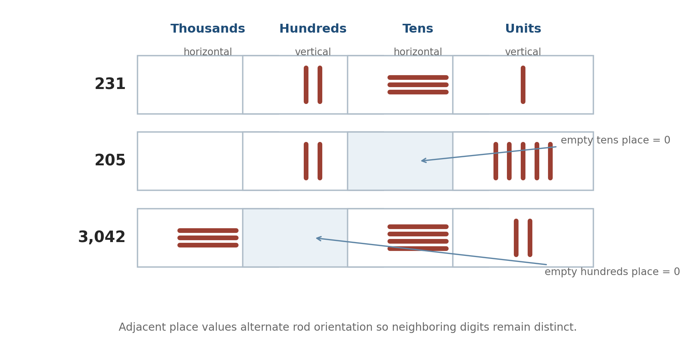
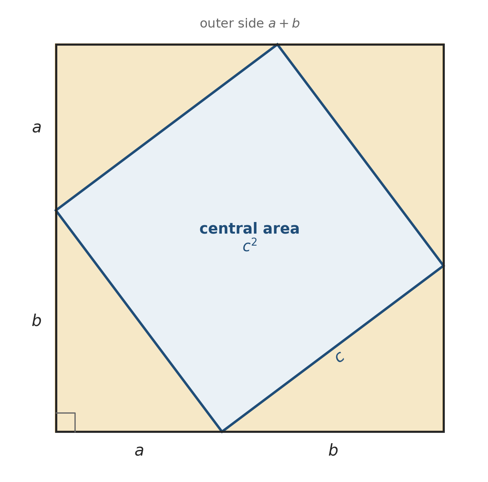

A different mathematical landscape
Today we move east, at your request, to China. That move is not simply a change of scenery. It gives us a chance to notice how easily the history of mathematics becomes distorted when one civilization is treated as the standard and every other tradition is measured against it.
You may have heard a familiar contrast: Greek mathematics was theoretical and Chinese mathematics was practical; Greeks proved, Chinese calculated. There is something behind that contrast, but in that form it is much too crude. The surviving Chinese classics do present problems, answers, and procedures rather than beginning with axioms in the style of Euclid. Yet procedures can embody general reasoning, and Chinese commentators - especially Liu Hui - repeatedly asked why those procedures worked. If we call that work merely practical, we miss much of its mathematical depth.
There is another difficulty. “Ancient Chinese mathematics” covers many centuries, several dynasties, and texts that were edited and commented on long after their earliest layers were written. We should resist talking about “the Chinese” as if one person sat at one desk for two thousand years.
Our landmarks today will be these:
- decimal numerals and counting rods;
- the Book on Numbers and Computation;
- The Nine Chapters on the Mathematical Art and Liu Hui;
- fangcheng, a method recognizably related to elimination;
- negative numbers as working objects;
- the gougu theorem and right-triangle geometry;
- Liu Hui’s cutting of the circle;
- Yang Hui’s magic squares.
Notice that this is not a complete history. It is one route through a very large landscape.
What did the physical writing material do to Egyptian mathematics? What did clay do to Babylonian mathematics? Keep those answers in mind, because in China the calculating surface itself becomes part of the mathematics.
Numerals that could be moved
Some of the earliest surviving Chinese numerals appear on oracle bones from the Shang period. These bones and turtle shells were used in divination. Questions were inscribed, heat was applied, cracks were interpreted, and records were sometimes added. They matter to us because the inscriptions include number signs and show a decimal way of organizing quantity.
But the central computational technology of the later mathematical tradition was not the oracle bone. It was the counting board.
Imagine a flat surface divided mentally, or sometimes visibly, into positions. Small rods are placed on it. A rod can be moved, removed, or regrouped. The arrangement represents a number, and the board is also the scratch work. It is rather like writing on a whiteboard, except that the symbols are physical objects.
The digits from 1 through 9 were represented by arrangements of rods. To prevent adjacent digits from running together, vertical and horizontal forms alternated from one place to the next: units, hundreds, and ten-thousands used one orientation; tens, thousands, and hundred-thousands used the other. Place value did much of the work. A vacant position could indicate that a place contained nothing; a written symbol for zero appeared later.

Read the first row as \(231\): two rods in the hundreds place, three rods in the tens place, and one rod in the units place. The hundreds and units rods are vertical; the tens rods are horizontal.
Now look at \(205\). The tens position is empty. Nothing has been written there, but the space is doing mathematical work. Likewise, the empty hundreds position in \(3{,}042\) must remain visibly present. Without a stable place-value layout, the same loose group of rods could be misread.
Compare this with Babylonian notation. Both traditions used position, and both at some stage could use an empty place. But one system was decimal and the other sexagesimal. The same broad idea - position gives a sign much of its value - can live inside very different numerical worlds.
Counting rods were not merely numerals. They supported algorithms. Numbers could be arranged in columns, moved through a sequence of operations, and colored differently. This is why it is misleading to ask only, “What symbols did they write?” A better question is, “What could they do on the board?”
Books made from many hands
The earliest surviving Chinese mathematical book presently known is commonly called the Book on Numbers and Computation, or Suan shu shu. It was buried in a tomb early in the second century BCE and recovered in the twentieth century on bamboo strips whose binding cords had decayed. Reconstructing the book meant putting a scattered object back into order before interpreting its mathematics.
The text contains dozens of problems about arithmetic, measurement, rates, areas, volumes, and what later came to be called excess and deficit. Its usual form is important:
a problem is stated; an answer is given; then a method is supplied.
The purpose of the method is not to solve only the displayed problem. It should work for a family of similar problems.
Consider a simple excess-and-deficit problem:
If each person receives 2 coins, 3 coins remain. If each person receives 3 coins, the group is short by 2 coins. How many people and how many coins are there?
Let \(p\) be the number of people and \(c\) the number of coins. In modern notation,
\[2p+3=c,\]
\[3p-2=c.\]
Subtracting the first equation from the second gives
\[p-5=0,\]
so \(p=5\) and \(c=13\).
The ancient text does not introduce \(p\) and \(c\) or display the equations this way. We are translating. That translation is useful because it lets us see a system of linear equations, but it can also tempt us to imagine modern algebra sitting invisibly behind the words. Historical reading requires both moves: translate enough to understand, then remember that the original method had its own language and tools.
The best-known Chinese mathematical classic is The Nine Chapters on the Mathematical Art. It was not written at one moment by one author. It accumulated over centuries and reached us through later editions and commentaries. Its 246 problems concern such matters as field measurement, proportions, taxation, construction, volumes, square and cube roots, and right triangles.
Around 263 CE, Liu Hui wrote the commentary through which the work became enormously influential. He did more than preserve answers. He explained and justified procedures, corrected or sharpened results, and added mathematical ideas of his own.
This gives us a different literary structure from Euclid’s Elements. Euclid’s familiar sequence is definition, postulate, proposition, proof. A Chinese classic more often gives problem, answer, procedure, commentary. Neither sequence is intellectually empty. They organize mathematical knowledge differently.
Fangcheng - elimination on a counting board
The eighth chapter of The Nine Chapters is called fangcheng. The original term is difficult to translate exactly; it is associated with a rectangular arrangement of measures. The method handles simultaneous linear relationships by arranging numbers on a counting board and eliminating them systematically.
Here is its first problem in modernized language:
Three bundles of top-grade grain, two of medium-grade, and one of low-grade yield 39 dou. Two top, three medium, and one low yield 34 dou. One top, two medium, and three low yield 26 dou. How much does one bundle of each grade yield?
Let \(x\), \(y\), and \(z\) be the yields of one bundle of top-, medium-, and low-grade grain. Then
\[\begin{aligned} 3x+2y+z&=39,\\ 2x+3y+z&=34,\\ x+2y+3z&=26. \end{aligned}\]
Today we might build an augmented matrix with each equation in a row. On the Chinese counting board, the data were arranged by columns. The order also appears reversed from our modern display:
\[ \begin{bmatrix} 1&2&3\\ 2&3&2\\ 3&1&1\\ 26&34&39 \end{bmatrix}. \]
Read the right-hand column from top to bottom: \(3,2,1,39\). That is the first equation, \(3x+2y+z=39\). The middle column is the second equation, and the left column is the third.
We begin by eliminating the first entry of the middle column. If the columns are \(C_1,C_2,C_3\) from left to right, replace \(C_2\) by
\[3C_2-2C_3.\]
Indeed,
\[3\begin{bmatrix}2\\3\\1\\34\end{bmatrix} -2\begin{bmatrix}3\\2\\1\\39\end{bmatrix} =\begin{bmatrix}0\\5\\1\\24\end{bmatrix}.\]
Now eliminate the first entry of the left column by replacing \(C_1\) with
\[3C_1-C_3,\]
which gives
\[3\begin{bmatrix}1\\2\\3\\26\end{bmatrix} -\begin{bmatrix}3\\2\\1\\39\end{bmatrix} =\begin{bmatrix}0\\4\\8\\39\end{bmatrix}.\]
At this stage the array is
\[ \begin{bmatrix} 0&0&3\\ 4&5&2\\ 8&1&1\\ 39&24&39 \end{bmatrix}. \]
To eliminate the 4 in the second position of the left column, replace \(C_1\) by
\[5C_1-4C_2.\]
The resulting array is
\[ \begin{bmatrix} 0&0&3\\ 0&5&2\\ 36&1&1\\ 99&24&39 \end{bmatrix}. \]
Now the left column says
\[36z=99,\]
so
\[z=\frac{99}{36}=\frac{11}{4}.\]
The middle column says
\[5y+z=24,\]
and therefore
\[y=\frac{17}{4}.\]
Finally,
\[3x+2y+z=39,\]
so
\[x=\frac{37}{4}.\]
Thus one bundle yields
\[x=9\frac14,\qquad y=4\frac14,\qquad z=2\frac34\]
dou for the three grades respectively.
Class check. Substitute the three answers into one of the original equations. For example,
\[3\left(\frac{37}{4}\right)+2\left(\frac{17}{4}\right)+\frac{11}{4} =\frac{111+34+11}{4}=\frac{156}{4}=39.\]
The same grain problem in modern Gaussian elimination
Some of you have taken linear algebra and some have not, so let us build the modern method from the beginning. An augmented matrix is simply a compact record of the coefficients and the numbers on the right-hand side. The vertical line stands where the equals signs stood:
\[ \left[ \begin{array}{ccc|c} 3&2&1&39\\ 2&3&1&34\\ 1&2&3&26 \end{array} \right]. \]
Each row is one equation. Interchanging two rows merely changes the order in which the equations are written, so first place the row beginning with 1 at the top:
\[ \left[ \begin{array}{ccc|c} 1&2&3&26\\ 2&3&1&34\\ 3&2&1&39 \end{array} \right]. \]
Now subtract twice the first row from the second and three times the first row from the third:
\[R_2\leftarrow R_2-2R_1,\qquad R_3\leftarrow R_3-3R_1.\]
This gives
\[ \left[ \begin{array}{ccc|c} 1&2&3&26\\ 0&-1&-5&-18\\ 0&-4&-8&-39 \end{array} \right]. \]
The zeros mean that \(x\) has been eliminated from the last two equations. To eliminate \(y\) from the third equation, use
\[R_3\leftarrow R_3-4R_2.\]
We obtain
\[ \left[ \begin{array}{ccc|c} 1&2&3&26\\ 0&-1&-5&-18\\ 0&0&12&33 \end{array} \right]. \]
The last row says \(12z=33\), so \(z=11/4\). The second row says
\[-y-5z=-18,\]
which gives \(y=17/4\). Finally, the first row gives \(x=37/4\).
Put the two triangular arrays beside one another on the board. The ancient calculation stores equations in columns and performs column operations; the modern calculation stores equations in rows and performs row operations. The numerical steps are not identical, but the strategy is the same: combine equations to make coefficients vanish, obtain a triangular arrangement, and recover the unknowns in reverse order.
There is a subtle computational point here. A counting board was especially convenient for integers. Fractions during intermediate steps would be awkward. The procedure therefore delayed division. Instead of immediately writing \(z=99/36\) and substituting a fraction, the calculator could keep the scaled integer quantities \(36z=99\), \(36y=153\), and \(36x=333\), dividing only at the end.
This is not an accidental clumsiness. It is an algorithm adapted to its medium.
Should we call this Gaussian elimination? Mathematically, the family resemblance is unmistakable: arrange coefficients and systematically eliminate unknowns. Historically, the name is awkward. The Chinese procedure predates Gauss by many centuries, and the expression “Gaussian elimination” itself became standard much later. I would say: fangcheng is an early systematic elimination procedure, closely related to what we now call Gaussian elimination. That acknowledges the mathematics without erasing its history.
Red and black rods - negative numbers become usable
Elimination naturally creates negative quantities. Suppose we subtract a larger coefficient from a smaller one. A method that cannot represent a deficit will quickly become stuck.
Chinese counting-board practice used rods of different colors to distinguish positive and negative quantities: red rods represented positive quantities and black rods negative ones. This is the reverse of the later accounting convention in which red ink signals debt. The important mathematical point is that oppositely directed quantities occupied the same computational system.
Liu Hui’s commentary gives rules for operating with what were called positive and negative counting rods. In modern notation, the logic includes familiar statements such as
\[a-(-b)=a+b\]
and
\[(-a)-b=-(a+b).\]
For us, negative numbers are ordinary. Historically, they were not ordinary everywhere. In a concrete problem, a negative answer might seem nonsensical: what is minus three bundles of grain? But inside a computation, a deficit, debt, or opposed quantity can be meaningful even when the final physical answer must be positive.
That distinction matters. A culture need not first invent an abstract number line and then permit negative numbers. Negative quantities can enter because an algorithm needs them.
Gougu - right triangles by words, numbers, and pieces
The traditional Chinese name for the right-triangle relation is the gougu theorem. The shorter leg was called the gou, the longer leg the gu, and the hypotenuse the xian. In modern notation, if these lengths are \(a\), \(b\), and \(c\), then
\[a^2+b^2=c^2.\]
An early discussion appears in the Zhoubi suanjing, often translated as the Mathematical Classic of the Gnomon and the Circular Paths of Heaven. The surviving text is difficult to date precisely and contains material from different periods, so this is not a sensible occasion for a simple contest over who “discovered the Pythagorean theorem first.” What matters is that a Chinese mathematical tradition treated the right-triangle relation numerically and diagrammatically.
The familiar example is the \(3\)-\(4\)-\(5\) triangle:
\[3^2+4^2=9+16=25=5^2.\]
But a single numerical verification is not yet a general explanation. The surviving Chinese discussion is presented through the \(3\)-\(4\)-\(5\) case; the following modernized, lettered version makes the general dissection visible.

The outer square has side \(a+b\), so its area is \((a+b)^2\). It is also composed of four right triangles, each of area \(ab/2\), together with the central square of area \(c^2\). Therefore
\[ (a+b)^2=4\left(\frac{ab}{2}\right)+c^2. \]
Expanding and cancelling \(2ab\) gives
\[a^2+b^2=c^2.\]
For \(a=3\) and \(b=4\), the outer square has area \(49\). The four triangles have total area \(4\cdot6=24\), leaving
\[49-24=25\]
for the central square. Its side is therefore 5.
A broken bamboo from The Nine Chapters
One problem describes a bamboo 10 chi high that breaks. Its top touches the ground 3 chi from the foot of the bamboo. At what height did it break?
Let \(h\) be the height of the remaining upright part. The broken upper portion has length \(10-h\). It becomes the hypotenuse of a right triangle whose legs are \(h\) and 3:
\[h^2+3^2=(10-h)^2.\]
After expanding,
\[h^2+9=100-20h+h^2,\]
so
\[20h=91\qquad\text{and}\qquad h=\frac{91}{20}=4.55.\]
The problem is practical, but its solution depends on recognizing an invariant geometric relation. This is another reason the labels “practical” and “theoretical” should not be treated as opposites.
Liu Hui cuts the circle
The practical-versus-theoretical stereotype becomes especially unhelpful when we look at Liu Hui’s work on the circle.
Earlier calculations sometimes used \(\pi=3\). Liu Hui inscribed regular polygons in a circle and repeatedly doubled the number of sides. The perimeter of the polygon approaches the circumference, and its area approaches the area of the circle.
If \(s_n\) is the side length of an inscribed regular \(n\)-gon in a circle of radius \(r\), the polygon can be divided into \(n\) triangles. As the number of sides grows, the polygon hugs the circle more closely. Liu Hui worked successively with polygons having more and more sides and obtained a much sharper approximation to \(\pi\).
Burton reports Liu Hui’s estimate from a 192-sided polygon as
\[3.141024<\pi<3.142704,\]
and his later calculation with many more sides led to the approximation
\[\pi\approx3.14159.\]
The exact modern reconstruction of every numerical step is less important for us today than the idea: bound a curved figure by a sequence of straight-sided figures whose behavior can be calculated.
This is a procedure, but it is not “mere calculation.” It rests on a limiting idea and on an argument about why refinement improves the approximation. Liu Hui’s commentary is exactly where the opening question - proof, diagram, procedure, successful answer - becomes interesting.
Yang Hui’s 4 by 4 exchange method
Magic squares sit at the border of arithmetic, pattern, recreation, and cultural symbolism. We have already encountered the \(3\times3\) Lo Shu square, so today we will build a larger one. A normal \(4\times4\) magic square uses the integers 1 through 16 exactly once so that every row, column, and main diagonal has the same sum.
Yang Hui, who lived in the thirteenth century, recorded magic squares of orders from 3 through 10, as well as magic circles. He did not claim to have invented all of them. For the \(4\times4\) square he explicitly described a method called huan yi, or “exchange.”
Begin by writing the integers 1 through 16 in their ordinary order:
\[ \begin{bmatrix} 1&2&3&4\\ 5&6&7&8\\ 9&10&11&12\\ 13&14&15&16 \end{bmatrix}. \]
First exchange the opposite outer corners:
\[1\longleftrightarrow16,\qquad4\longleftrightarrow13.\]
The array becomes
\[ \begin{bmatrix} 16&2&3&13\\ 5&6&7&8\\ 9&10&11&12\\ 4&14&15&1 \end{bmatrix}. \]
Now exchange the opposite inner corners:
\[6\longleftrightarrow11,\qquad7\longleftrightarrow10.\]
The completed square is
\[ \begin{bmatrix} 16&2&3&13\\ 5&11&10&8\\ 9&7&6&12\\ 4&14&15&1 \end{bmatrix}. \]
Check one row, one column, and the two diagonals:
\[16+2+3+13=34,\]
\[2+11+7+14=34,\]
\[16+11+6+1=34,\]
\[13+10+7+4=34.\]
The exchanges replace selected entries with their complements to 17:
\[1+16=4+13=6+11=7+10=17.\]
The remaining numbers also occur in complementary pairs: \(2+15\), \(3+14\), \(5+12\), and \(8+9\) are all 17. Each completed row, column, or main diagonal contains two such pairs, so its sum is
\[17+17=34.\]
We can also predict 34 before constructing the square. The integers from 1 through 16 total
\[1+2+\cdots+16=\frac{16\cdot17}{2}=136.\]
If four rows have the same sum, each must sum to
\[\frac{136}{4}=34.\]
The method is striking because it begins with the most ordinary possible arrangement and changes only eight positions. Once again, we meet mathematics as an art of procedures - but also as an art of seeing which quantities belong together.
Closing and Afterthoughts
What counts as an explanation in mathematics: a proof, a diagram, a procedure, or a successful answer?
Today we saw all four. Counting rods made procedures visible and movable. The Nine Chapters organized mathematical knowledge around problems and methods. Liu Hui asked why methods worked. Fangcheng eliminated unknowns while respecting the integer-friendly counting board, while modern row reduction let us view the same problem through contemporary notation. Negative numbers became usable within computation. The gougu dissection joined a picture to a general relation. Polygon cutting gave increasingly precise information about a circle. Yang Hui turned a number pattern into a construction.
Afterthoughts - choose one
- The counting board made rearrangement easy but did not preserve every intermediate step. How might that tool have shaped the style of Chinese mathematical writing?
- Is it fair to describe fangcheng as “Gaussian elimination before Gauss”? Explain what that phrase reveals and what it hides.
- Why might negative numbers be accepted first as intermediate computational objects rather than as answers to concrete problems?
- Does Liu Hui’s cutting-circle method weaken the claim that Chinese mathematics was practical rather than theoretical? Explain.
- Explain why Yang Hui’s exchanges are precisely the exchanges needed to turn the ordered \(4\times4\) array into a magic square. Why is knowing that the required sum is 34 not enough by itself?
- Compare Chinese counting-rod notation with either Egyptian numerals or Babylonian sexagesimal notation. Which similarities are mathematical, and which arise from the physical medium?
- In the gougu dissection, where is the general proof? Is it in the diagram, in the algebraic equation, or in the combination of the two?
- The bamboo problem looks like a practical measurement exercise. What mathematical reasoning turns it into something more general than a single numerical puzzle?
References
- David M. Burton, The History of Mathematics: An Introduction, section on the ancient Chinese Nine Chapters and later Chinese mathematics.
- Jay Cummings, Math History: A Long-Form Mathematics Textbook, section 2.3, “Ancient Chinese Methods.”
- Jay Cummings, discussion of Yang Hui’s magic squares and magic circles, supplied excerpt.
- Marty Lewinter and William Widulski, The Saga of Mathematics: A Brief History.
- Chia-Yun Wu, “Were the Mathematical Aspects of Chinese Magic Squares Influenced by Arabic Magic Squares? Focusing on Yang Hui’s Zong Heng Tu of the 13th Century,” no. 18 (2013): 45-58.
- J. J. O’Connor and E. F. Robertson, “Chinese Numerals,” MacTutor History of Mathematics Archive.
- NRICH, “Magic Squares II,” University of Cambridge, for a modern classroom presentation of complementary exchanges in doubly even magic squares.